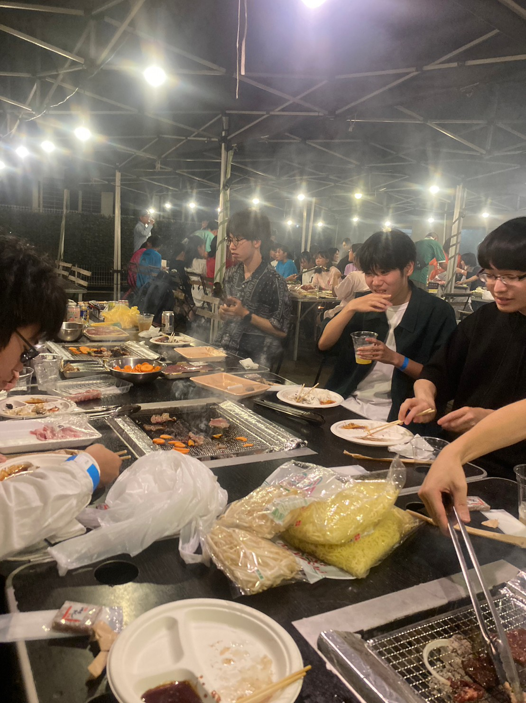

Taki Plaza Gardener(以下TPG)は
東京⼯業⼤学に存在する国際交流と学⽣⽀援を⽬的とする施設である
Hisao&HirokoTAKIPLAZAでの、学⽣による活発な利⽤を促すことを⽬的として活動しています。
TPGについて
■TPGは年間を通してさまざまなイベントを企画・運営しています。 中でも、新入生向けの学内最大級の学生交流イベントである若葉祭を毎年開催してきました。 その他、留学生の参加者も多いTakiBarや音楽系サークルに発表を行ってもらうTakiFes、少人数でボードゲームを制作するボドゲ制作会、折り紙企画などを行ってきました。 これまでのイベントについてはこちらをご覧ください。

■46名(2023.12現在)のメンバーが所属し、イベント班・コミュニティ班・広報班・制作班・マネジメント班の5つの班に分かれて活動しています。学士3年生以下の東工大生で構成されており、留学生も所属しています。 活動は週1で、活動拠点となるTakiPlaza地下2階の居室では日頃から誰かしらが居てにぎやかに過ごしています。 班や学年、学院を越えてメンバー同士が仲良くなれるよう、任意参加で組活動を定期的に実施しています。お昼を食べに行ったりボードゲームをしたり、時には遠出したりとさまざまなことをしています。

TPGは常時メンバー(B3以下)を募集しています。
何をしているの？と聞かれることも多いですが、TakiPlazaの運用を考える団体として、なんでもできる団体でありたいと思っています。
現在所属するメンバーも、友達が欲しかったり、とりあえず入ってみたりと気軽に入会した人が多いです。
TPGに興味を持ってくれた方は、お気軽にSNS等でご連絡ください！